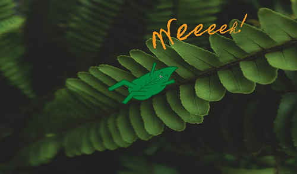

This was my first projected on Adobe Illustrator. I used an image of the pant, which I found found on pexel.com. I then drew a little leaf-creature and created it on Illustrator. I found that Illustrator was a bit more difficult than I was expecting.
